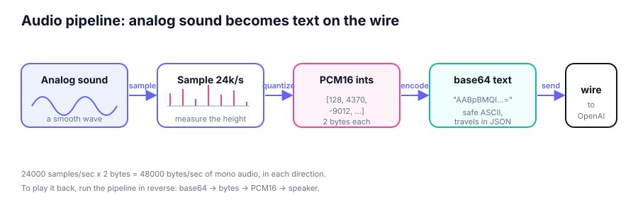
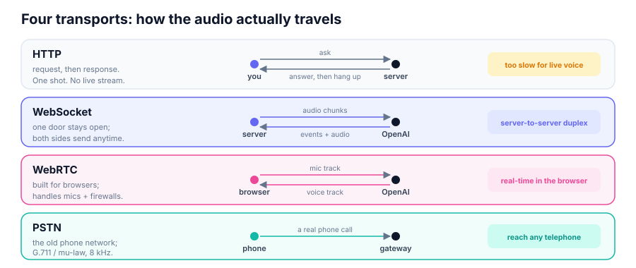

Voice Agents · Module 01
What audio really is, and how it travels
The one idea
No OpenAI calls this module. We record on your own machine, look at the raw numbers, then learn which connection can carry them both ways, live.
The map
| Concept | What it is | Why it matters |
|---|---|---|
| Analog sound | Smooth pressure wave in air | What the mic senses |
| Sampling | Measure the wave many times/sec | Wave becomes numbers |
| 24 kHz | 24000 measurements / second | The rate the API expects |
| PCM16 | Each sample a 16-bit integer | The exact number format |
| mono | One channel, not stereo | Half the bytes, what API uses |
| base64 | Bytes rewritten as safe text | JSON moves text, not binary |
| transport | HTTP / WebSocket / WebRTC / PSTN | Can audio flow both ways? |
| latency | Delay before you hear a reply | Under ~300 ms feels natural |
Concept 1 · Analog sound
Concept 2-3 · Sampling & the rate
audio_config.py sets SAMPLE_RATE = 24000 in one place so it never drifts.Concept 4-5 · PCM16 & mono
-32768..32767. 0 = silence, big = loud.shape : (72000,) # 3s x 24000
dtype : int16 # PCM16
first 10: [0, 1129, 2244, 3329,
4370, 5353, 6265, ...]Concept 6 · base64
A-Z a-z 0-9 + /raw = chunk.tobytes() # 2400 bytes
b64 = base64.b64encode(raw).decode()
# -> "AABpBMQIAQ0SEek..." (later: JSON)Concept 7 · The pipeline

Play it back by running every arrow in reverse: base64 → bytes → PCM16 → speaker.
Concept 7 · The money math
Concept 8 · Transports

They differ by duplex (both ways at once?) and by environment (server, browser, phone line).
Concept 8 · Which and when
| Transport | Shape | Duplex? | We use for |
|---|---|---|---|
| HTTP | Ask, one answer, hang up | No | Nothing live |
| WebSocket | One open door, send anytime | Yes | Modules 02-05 (Python) |
| WebRTC | Live media call in browser | Yes | Modules 07-08 (web app) |
| PSTN | A real telephone call | Yes | Context (8 kHz mu-law) |
"WebRTC for browsers, WebSocket for servers" is OpenAI's own guidance.
Concept 8 · WebSocket
response.output_audio.deltaresponse.doneresponse.output_audio.delta, bytes in the delta field. It is not response.audio.delta (the common wrong guess).Concept 8 · WebRTC
ek_ tokenek_ token. WebRTC also does NAT traversal: finding a path through home routers.Concept 8 · PSTN
audio/pcmu (vs audio/pcm for web).Concept 9 · Real time
Every stage adds milliseconds. Streaming, turn detection, and low-latency settings all exist to stay in budget.
Hands on
uv sync
uv run python src/main.py
uv run python src/main.py --seconds 5
uv run python src/main.py --tone # no micshape : (72000,) # int16 PCM16
bytes : 144,000 # 72000 x 2
data rate: 48,000 bytes/sec
one chunk = 50 ms = 2,400 bytes
base64 length: 3200 chars
round-trips back to int16? True--tone builds the same PCM16 / 24 kHz / mono shape, so every lesson holds even with no microphone.
What you learned
response.output_audio.delta. The browser never sees the real key. Nearly every later choice is a latency choice.The one idea to remember
Next: open a real WebSocket. · Module 02 · Realtime Handshake